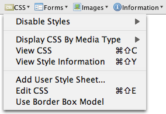

Debugging CSS
Getting a cascading style sheet to work properly to work properly is always difficult for me. Sometimes (most of the time) things just don't work they way I think they should. This problem gets magnified when working on a web app - the edit/build/deploy/test cycle can take 60 seconds or more, add to that the problem of the browser or web server occasionally caching the CSS so I don't even see the changes that I thought I made and it can get downright frustrating.
Coming to the rescue is the Web Developer Toolbar. This firefox plugin adds a toolbar with lots of nifty tools useful for developing and debugging web apps. The toolbar has some really useful features for debugging CSS. Turn on "View Style Information" and whenever you mouse-over an element in your browser, it put a box around it and shows you the style information like so:
html > body > div #banner > div .bannerStatusBox > table .bannerStatusBox > tbody > tr > td .bannerLeft
This can be very helpful if you are using a toolkit like GWT that attaches its own stylenames to widgets.
Perhaps the most powerful tool in the Web Developer Toolbar is the CSS Edit feature. This feature allows you to live-edit the CSS of the current page. Make a change to the CSS and instantly see how it affects the page. The edit/build/deploy/test loop drops from 60 seconds to 0 seconds. It is an extremely useful way to debug and experiment. When you are happy with the updated CSS, you can save it back to your project directory, so that the next time you do the formal build/deploy your CSS changes will be there.
There
are lots of other nifty features in the Web Developer Toolbar. If you
are doing any web development, I don't see how you can live without it.
Posted by Venky on August 01, 2007 at 08:26 AM EDT #
Posted by Vadim Voituk on August 01, 2007 at 09:09 AM EDT #
Posted by Daniel Lemire on August 01, 2007 at 09:19 AM EDT #
Posted by Hari on August 02, 2007 at 03:48 AM EDT #